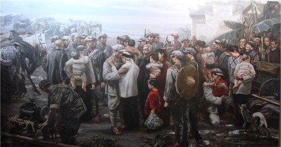
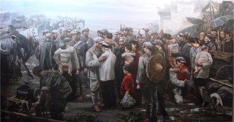
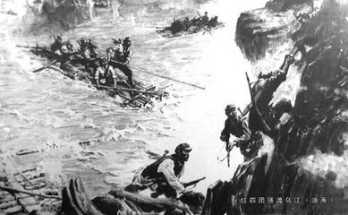
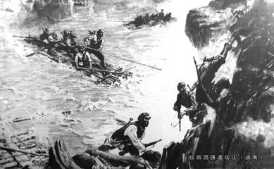
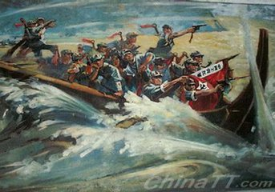
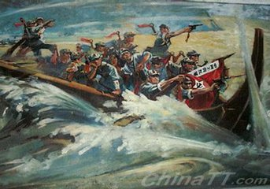
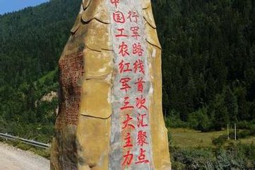
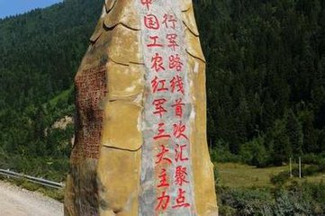

被迫的转移
1934年10月，由于博古、李德等人[2-3] “左”倾教条主义的错误领导，第五次反“围剿”失败。中央革命根据地（亦称中央苏区）红军第一方面军（中央红军）主力开始长征，同时留下部分红军就地坚持游击战争。8月，中共中央和中革军委为了给中央红军战略转移探索道路，命令红六军团撤离湘赣苏区，到湘中发展游击战争。10月，红六军团与红三军（后恢复红二军团番号）会合，并创建了湘鄂川苏区[1] 。 1934年10月上旬，中央红军主力各军团分别集结陆续出发，中共中央和红军总部及直属纵队离开江西瑞金。

 
今天是1934年12月2日，有点冷，不过和我们刚打了一场惨烈的败仗相比，天气再冷也算不了什么。之前我们一路西行，突破了敌人的四道封锁线，而就在昨天我们渡过了湘江。
11月27日我们团的接到一个任务，就是把桂军阻挡在新圩以南。尽管知道这次战斗是以8万人对抗40万人，但同志们没有一点点恐惧和害怕，无论如何哪怕是拼尽最后一颗子弹，也要完成组织上交给我们的任务。
在11月27日下午16时左右，我们抢在桂军前面到达了新圩，占领了新圩-灌阳公路两边的山头，并沿公路向南面的马渡桥推进，占领公路两边的山头。28日凌晨，敌人正式向我们发起了进攻，他们的火力十分密集，飞机、大炮轮番进攻，这让我们伤亡惨重，好几位团团长、副团长及团参谋长、政治部主任也身负重伤甚至牺牲。
战斗一直持续到29日，我不知道我的战友们还有多少人，但是我知道只要我还活着，就一定会坚持下去。湘江上一片灰蒙蒙的，那是我的同志们。渡江之后我们将要离开广西，继续向西转移。
背景
湘江战役是中央红军突围以来最壮烈、最关键的一仗，我军与优势之敌苦战，终于撕开了敌重兵设防的封锁线，粉碎了蒋介石围歼红军于湘江以东的企图。
12月11日我和我的同志占领了湖南通道县城。12日，中革军委又临时决定在这里召开紧急会议，参加会议的人有：博古、周恩来、张闻天、毛泽东、王稼祥和李德。
会议着重讨论红军战略转移的前进方向问题。毛泽东极力说服博古等主要领导人，建议放弃与二、六军团会合的原定计划，改向敌人力量薄弱的贵州前进。他认为应该放弃在长江以南同二军团一起建立苏区的意图，向四川进军，去和四军团会师。张闻天、王稼祥、周恩来等大多数人赞同毛泽东的正确主张。
但李德、博古仍坚持与二、六军团会合原定计划。这次会议虽然通过了毛泽东的建议，但由于中央领导层中意见不统一，故未能对战略转移的大方向作出决定。

1934年12月18日，党中央政治局在黎平召开会议。参加者有：周恩来、博古、毛泽东、陈云、刘少奇、李德等。
会议讨论红军的进军路线问题。会上展开了激烈的争论。主持会议的周恩来采纳了毛泽东的意见。与会大多数肯定了毛泽东的正确主张，通过了《中央政治局关于战略方针之决定》，决定放弃与红二、六军团会合的原定计划。
会后，对部队进行了整编，撤销八军团并入五军团，军委一、二纵队合并为军委纵队。由刘伯承任司令员、陈云任政治委员、叶剑英任副司令员。12月19日，中央军委将中央红军分为左、右两个纵队向以遵义为中心的黔北地区前进。
意义
黎平会议最后确定了向贵州转兵的战略决策，毛泽东的正确意见终于被党中央采纳，避免了陷入重围的危险，使红军争取了主动。黎平会议是长征以来具有决定意义战略转变的关键，为遵义会议的召开作了重要的准备。
 

今天是1935年1月3日，在12月31日时我和我的同志接到了抢渡乌江的军令，经过半天的急行军，到达了乌江南边100多里的猴场。老乡们说，渡乌江必须具备大木船、大晴天和熟悉乌江水性的好船夫。
其实，我们什么都没有。整个乌江像一条乌青色的蛟龙向东北奔腾；无论投下一片什么东西，转眼就冲得无影无踪了。突破乌江的战斗，从江界河渡口、龙溪回龙场渡口和岩坑渡口3个地方同时打响。由于当晚我们在乌江边上迎新守岁。所以第二天开始先后两次试渡。1月2日，强渡乌江的大队竹筏接近岸边时，早已守候在敌人工事下的六位勇士从敌人鼻子底下出奇不意地跃出来。
团首长迅速组织1营过江，占领了高地。在炮兵连炮火的有效打击下消灭了向我滩头部队冲击的敌军后滩头部队乘势发起猛烈的进攻。早已等候在江边的3营和其它兄弟部队乘胜踏着工兵营用竹筏子和门板架起来的浮桥，冲过了乌江。就这样，敌人号称固若金汤的乌江天险，终于被我们突破了。
意义
强渡乌江天险：是长征十大战役之一，这一成功使得红军全面占领遵义城。
1935年1月15日至17日，中共中央在遵义召开了政治局扩大会议。主要议题是总结第五次反“围剿”的经验教训。会议肯定了毛泽东关于红军作战的基本原则，否定了博古关于第五次反“围剿”的总结报告，提出了中国共产党的中心任务是战胜川、滇、黔的敌军，在那里建立新的革命根据地。
会议决定改组中央领导机构，增选毛泽东为政治局常委(书记处书记)，取消博古、李德的最高军事指挥权，仍由中央军委主要负责人周恩来、朱德指挥军事。会后，常委进行分工：由张闻天代替博古负总责，毛泽东、周恩来负责军事。在行军途中，又成立了由毛泽东、周恩来、王稼祥组成的三人军事指挥小组，负责长征中的军事指挥工作。至此，遵义会议以后的中央组织整顿工作大体完成。
意义
遵义会议：这次会议开始确立实际以毛泽东为代表的马克思主义的正确路线在中共中央的领导地位，挽救了党、挽救了红军、挽救了革命，是中国共产党历史上一个生死攸关的转折点，标志着中国共产党从幼稚走向成熟。

我们需要北上抗日，而金沙江就在我们北上的必经之路上，所以我们必须想尽一切办法渡过赤水河。
土城之战突遇数倍川军助战，为避敌锋芒，我们在1935年1月29日，一渡赤水河，诱使敌军汇聚川南，此时黔北（贵州）空虚，于是我们要杀他个回马枪！
2月18日至21日，我们二渡赤水河，重回贵州，成功把国民党大部队甩开三天路程，打乱了敌人部署，敌军方寸大乱，5天内我们攻克了娄山关、再占遵义，把敌军守将一直赶到乌江边，他们慌乱中砍断浮桥，来不及过江士兵纷纷掉进河里!蒋介石不得不承认这是国军围剿以来的最大耻辱，他被打疼了，又指挥大部队向遵义杀来。
3月16日至17日我们小股部队虚张声势三渡赤水河再次进入川南，大部队则隐蔽起来。
待敌人大军向西再次追至川南之际，乘敌不备折兵向东，于3月21日晚四度赤水，并31日南下突破乌江，成功把几十万追兵甩在北岸，兵峰直逼贵阳。
意义
1.四渡赤水是长征中红军打的最漂亮的一场仗。是通过调虎离山之计赢得了胜利。共歼敌1000余人，俘敌3人，并摆脱了敌人的围追堵截。


5月3日，军委干部团的同志们接受了抢夺皎平渡的任务。我们二话未说，翻山越岭日夜兼程180里，当天夜晚就来到了金沙江边。在渡口，我们幸运地找到了一条船。原来这条船是送探子来南岸探查情况的，探子不知跑到哪里去了。
后来，我们又在当地农民的协助下，从水里捞出了一条破船，用布把漏洞塞上。然后，我们乘坐这两条船悄悄地渡到北岸。敌人的哨兵以为探子回来了，没有在意。我们来了个突然袭击，一举消灭了一连正规军和一个保安队，控制了皎平渡两岸渡口。
后来，我们又找到了五条船，动员了36名艄公。这个时候，红一军团和红三军团也都接到了从皎平渡过江的命令。从5月3日至9日，在7天7夜的时间里，我们就靠这7只小船过了江。担任后卫的9军团在南渡乌江以后奉军委命令一直在黔西绕圈子，时东时西，忽南忽北，牵制了敌人部分兵力。5月6日，他们到了云南东川与巧家县之间，并于5月9日在树节渡顺利地渡过了金沙江。
意义
跳出国民党军队的层层包围，甩开了围追堵截，保存了红军的实力，开始了史无前例的长征，为新民主主义革命开了一个好头。党从幼稚走向成熟。
1935年5月12日，中共政治局在四川省凉山州会理县城郊铁厂举行扩大会议。张闻天主持会议。参加会议的有：朱德、周恩来、张闻天、林彪、聂荣臻、彭德怀、杨尚昆、毛泽东等。
会议针对当时部队的思想情绪，进一步阐明了党中央和中央军委机动作战才能摆脱敌人重兵包围的作战方针。会议总结了遵义会议以来在川滇黔边实行大规模运动战的经验，讨论了渡江后的行动计划，决定立即北进，抢渡大渡河，向红四方面军靠拢。批评了林彪要求撤换毛泽东、朱德军事指挥和反对机动作战的错误，从而统一了认识，维护了党和红军的团结，巩固了毛泽东在党和红军的领导地位，坚持了正确的军事路线。
意义
会理会议是长征中一次重要的会议，它统一了中央红军的战略思想，进一步巩固了“遵义会议”的成果，是“遵义会议”精神的延续。会后，中央红军组成以刘伯承为司令员、聂荣臻为政委的先遣队，为中央红军北上四川开路。
 
5月24日晚，我们的先头部队赶到安顺场，占领了这里。并在渡口附近找到1只木船。安顺场一带大渡河宽100多米，水深流急，高山耸立。在我们到达之前，敌军抢占了这一地区，正在构筑工事，凭险防守，情况十分不利。
第二天早晨，我们就开始强渡大渡河。刘伯承、聂荣臻亲临前沿阵地指挥。孙继先挑选17名勇士组成渡河突击队，岸上轻重武器同时开火，掩护突击队渡河。熊尚林带领第一批8人先渡河，孙继先带领第二批8人再渡河。快接近对岸时，川军向渡口反冲击，十八名勇士战胜了惊涛骇浪，冲过了敌人的重重火网，终于登上了对岸。
敌人见红军冲上岸滩，便往下甩手榴弹。十八位战士利用又高又陡的台阶死角作掩护，沿台阶向上猛烈冲杀。在右岸火力的支援下，击退了川军的反扑，控制了渡口，后续部队及时渡河增援，一举击溃川军1个营，巩固了渡河点。随后，我们由此渡过了大渡河。
意义
强渡大渡河，在被敌人视为插翅难飞的天险防线上，打开一个缺口，为中央红军北上开辟了一条通道。

周恩来提出建立川陕甘根据地的战略方针，彭德怀、林彪、博古、毛泽东、王稼祥、邓发、朱德、刘伯承、聂荣臻、凯丰、刘少奇、张闻天等一致同意。但实现这一战略方针的关键是，应首先迅速攻打松潘，进占甘南，消灭敌人有生力量，建立革命根据地。
1935年6月28日，中央政治局作出了《关于一、四方面军会合后战略方针的决定》。《决定》认为：“必须派出一个支队，向洮河、复河活动，控制这一地带，使我们能够背靠于甘、青、新、宁四省的广大地区，有利的向东发展。”《决定》还认为，大小金川流域，“不利于大红军的活动与发展，但必须留下小部分力量发展游击战争，使这一地区变为川陕甘苏区之一部。”《决定》最后指出：“为了实现这一战略方针，必须坚决反对避免战争退却逃跑以及保守偷安停止不动的倾向，这些右倾机会主义的动摇是目前创造新苏区的斗争中的主要危险。”
意义
两河口会议为实现党和红军北上抗日和领导全国抗日运动的伟大战略目标奠定了基础。

周恩来提出建立川陕甘根据地的战略方针，彭德怀、林彪、博古、毛泽东、王稼祥、邓发、朱德、刘伯承、聂荣臻、凯丰、刘少奇、张闻天等一致同意。但实现这一战略方针的关键是，应首先迅速攻打松潘，进占甘南，消灭敌人有生力量，建立革命根据地。
1935年6月28日，中央政治局作出了《关于一、四方面军会合后战略方针的决定》。《决定》认为：“必须派出一个支队，向洮河、复河活动，控制这一地带，使我们能够背靠于甘、青、新、宁四省的广大地区，有利的向东发展。”《决定》还认为，大小金川流域，“不利于大红军的活动与发展，但必须留下小部分力量发展游击战争，使这一地区变为川陕甘苏区之一部。”《决定》最后指出：“为了实现这一战略方针，必须坚决反对避免战争退却逃跑以及保守偷安停止不动的倾向，这些右倾机会主义的动摇是目前创造新苏区的斗争中的主要危险。”
意义
两河口会议为实现党和红军北上抗日和领导全国抗日运动的伟大战略目标奠定了基础。
1935年8月20日，中央政治局在四川毛儿盖举行的会议。做出了红军主力应向黄河以东，支队向黄河以西去破坏敌人的封锁计划的决定。红军第一、第四方面军分别在毛儿盖和卓克基两地集中，混合编为左右两路军，在中共中央统一指挥下，继续北上过草地。右路军在毛泽东、周恩来、徐向前、叶剑英等率领下，从毛儿盖出发，绕过松潘穿过草地向班佑前进。左路军在朱德、张国焘、刘伯承等率领下，由马塘、卓克基出发过草地向阿坝地区开进。应采取积极的向东的方针。左路军应向右路军靠拢，坚决坚持向东打，以岷州、洮河为中心向东发展，不应以一些困难而转移向西。会议最后通过由毛泽东起草一个决议，作为对两河口会议通过的《关于一、四方面军会合后战略方针的决定》的补充。
意义
毛儿盖会议是两河口会议、沙窝会议的继续和发展。这次会议确定的以岷州洮河为中心向东发展的行动方针，是对两河口决定的补充，对于明确红军主力发展方向，克服张国焘的分裂主义危险，起了积极的作用。

1935年8月底，经过艰苦跋涉，我们右路军终于走出草地，到达班佑、巴西地区。胡宗南得知后，想将我们阻止在包座河一线。 而我们要北上甘南，必须打下包座。鉴于担负后卫任务的红3军（即红三军团）还没走出草地，开路的红1军又比较疲劳，于是由红四方面军部队担负进攻任务。
以徐向前的部署，30军第264团攻击大戒寺之敌，30军主力第88师、89师埋伏在上包座西北的丛林中，准备歼灭敌增援的49师；4军第10师攻击求吉寺之敌，主力控制各要道，并随时准备出击；红一方面军第1军为预备队，位于巴西和班佑地区待机。8月29日，国民党军第49师连夜进攻，战斗打响。红264团稍作抵抗即向大戒寺东北后撤，诱敌深入。伍诚仁志得意满，将师部及师直属队移驻大戒寺，边向胡宗南报捷，边下令部队全线向北推进。红30军部队沉着应战，以一个团节节阻击，依托一些小的山头边打边撤，逐步将敌诱入预设阵地。31日下午，敌第49师全部被诱进了我们的伏击圈。这里是一个山谷，山上全是原始森林，部队隐藏在丛林之中。伍诚仁将红军的边打边撤误以为是节节败退，命令全军放胆前进。17时，冲锋号四起，大家一齐出击，冲下山坡，扑向敌群。经过数小时激战，第49师大部被歼，伍诚仁受伤后乘夜逃窜。与此同时，红4军在军长许世友指挥下，向求吉寺之敌发起攻击，歼敌1个营。
意义
歼敌四千余人，俘敌八百余人，打开了北上的通道，使红军北出四川创建川陕甘根据地计划。
 
毛儿盖会议后，1935年8月底，右路军(中央红军)穿过茫茫草地到达班佑、巴西一带，等待与左路军会合。 但张国焘率左路军到达阿坝后，违抗中央命令，拒不与右路军会合，并要挟右路军和党中央南下，甚至企图危害党中央。
针对这种情况，中共中央于1935年9月2日至9日在班佑寺内连续召开政治局会议。29日在巴西召开中央政治局常委会议，着重研究教育与宣传问题，张闻天、博古、毛泽东、王稼祥、李维汉、凯丰等出席会议。中央政治局于24日将毛儿盖会议决定电告张国焘。
中央政治局于9月2日在巴西召开会议。会议讨论一方面军工作方针问题。毛泽东在会上作了报告。提出：现在一方面军因长途行军的疲劳，需要相当时间的休息，部队需要相当时间的整理。战略方针已确定向东，向汉人聚居区发展，给养条件是可以改善的，休息时间除作战任务外，是可以争取的。一方面军整理的方针，可参考中央苏区时的制度，学习四方面军的优良制度。我们到甘肃后，客观条件是有利于红军扩大的，主要的问题是要加强领导，仔细地建立与群众的关系，重新进行三大纪律、八项注意的教育。要把扩大红军、整理训练同最重要的作战任务结合起来。一方面军的司令部、政治部应该重新建立起来，立即进行工作。
意义
巴西会议又一次将红军从危机中解救了出来。巴西会议是决定党和红军前途命运的一次关键会议，在中共党史上有着重要的历史地位。

会议决定将原有1、3军团缩编为中国工农红军陕甘支队，由彭德怀任司令员，毛泽东兼政治委员，林彪任副司令员，王稼祥任政治部主任，杨尚昆任政治部副主任。成立“五人团”，作为全军最高领导核心，由彭德怀、林彪、毛泽东、王稼祥、周恩来组成。组成编制委员会，主任为李德，委员为叶剑英、邓发、蔡树藩、罗迈。还正式作出《关于张国焘同志的错误的决定》。
《决定》最后指出了张国焘的右倾机会主义与军阀主义倾向的历史根源，申明要坚决纠正张国焘的严重错误，并号召“红四方面军中全体忠实于共产党的同志团结在党中央的周围，同这种倾向做坚决的斗争，以巩固党与红军。”但为教育并挽救张国焘本人，党仍给他以改正错误的机会，并争取四方面军的广大指战员，所以，这个《决定》当时只发给党的中央委员，没有向全党公布。
意义
俄界会议公开批判了张国焘的反党分裂活动和军阀主义倾向，改变了在陕甘建立根据地的战略方针，确定用游击战争来打通国际联系，创建新根据地的战略方针，这对于克服张国焘的右倾分裂主义与军阀主义，保证党中央北上方针的贯彻实施，有着重大的意义。
1935年9月13日，党中央率陕甘支队(由红1方面军第1、3军和军委纵队改编)由俄界出发，于17日到达岷山脚下的腊子口。蒋介石在岷县、腊子口地区配置了两个师，妄图凭借天险挡住红军的出路。
9月17日下午，部队向腊子口发动了猛烈的进攻。可是由于地形不利，兵力无法展开，从下午攻到半夜，连续冲锋十几次都没有成功。在半夜时分，部队暂停进攻，重新研究作战方案。根握新侦察到的情况和战士们的建议，我们兵分两路、一路由政委杨成武率领第6连从正面进行夜袭，夺取木桥；如果偷袭不成就连续发动进攻，达到疲劳敌人，消耗敌人弹药，造成敌人恐慌的目的。另一路由团长王开湘率领第1、第2连，悄悄地迂回到腊子口右侧，攀登陡峭的崖壁，摸到敌人后面去。
战斗再次打响了，正当正面战斗激烈进行的时刻，迂回部队已摸到腊子口右侧峭壁下。一个苗族战士手持带铁钩的长杆，顺着陡壁最先爬了上去，然后将事先接好的绑腿缠在树干上放下来，后来的战士拉着绑腿一个接一个地全部上去。他们突然出现在敌人的后方，吓得敌人魂飞魄散，扔下枪支仓惶逃命。
意义
党中央率陕甘支队通过腊子口后，9月20日，进占甘南的哈达铺。至此，党中央和红一方面军主力终于走出了雪山草地的藏民区域，打破了蒋介石妄图利用恶劣的自然条件“困死”红军的阴谋。
1935年10月19日，我们到达了陕甘根据地的保安县吴起镇，结束了长征。蒋介石调集东北军5个师的兵力，企图东西对进，围歼红军于葫芦河、洛河之间地区。为粉碎国民党军新的进攻，中央决定，集中兵力，向南作战，首先在直罗镇一带歼灭沿葫芦河东进之敌一部，尔后转移兵力，各个歼敌。
11月20日，在飞机的掩护下，国民党军先头部队第109师兵分三路沿葫芦河谷及南北山地向直罗镇进攻，而我们则成功地把他们诱入直罗镇，进入了我们预设的战场之内。11月21日子夜，我们开始向国民党军发起进攻。第1军团从正北和西北方向，进攻直罗镇北山，断其退路；第15军团从西南、正南和东南三个方向，进攻直罗镇南山及东南地区，阻其东逃。激战至14时，第109师大部被歼，其残部500余人退入直罗镇东南土寨负隅顽抗。此时，国民党军东西两路援军已迫近直罗镇。为继续战斗，红1方面军以少数兵力围困敌第109师残部和阻击西援之敌第117师，主力则向西迎击东援之敌第106、111师。该两师遭红军阻击后，因害怕被歼，于23日纷纷沿葫芦河西撤。我们乘胜追击，在张家湾地区歼敌第106师1个团。被包围在直罗镇东南土寨的敌第109师残部待援无望，23日午夜分路突围，24日上午被红军全歼，师长自杀。
意义
这次战役的胜利，彻底粉碎了国民党军对陕甘苏区的第三次“围剿”，加速了国民党营垒的分化，对以后的西安事变、抗日民族统一战线的形成产生了重要影响，并为党中央奠基西北打开了新局面。


毛泽东在会上首先报告俄界会议以来的形势与陕甘支队的任务。在讨论中，邓发、李富春、聂荣臻、刘少奇、叶剑英、凯丰、博古、贾托夫、张闻天、彭德怀先后发阐述了下列主要问题：1.粉碎敌人围剿，保卫与扩大陕北苏区。2.拥护榜罗镇会议决定，使陕北成为领导全国革命的中心。指出榜罗镇决定的改变是很正确的重要的，是很应该的，应决定在此建立巩固苏区，应向战斗员解释。3.打通国际路线，取得苏联援助。刘少奇认为：打通国际路线，取得联络，现虽不能派部队，但用电报或通讯，与之联络是很重要。4.加强与西北红军联系。
意义
这次会议为1935年11月上旬中央红军同西北红军顺利会师作了准备，对团结和汇聚西北革命力量起了重要作用。这次会议对党由土地革命战争向民族革命战争的转变和党在西北地区开始建立抗日反蒋统一战线，作了重要的准备，起着决定性的推动作用。
版权所有：山西太原中北大学学生工作部（处）
地址：山西省太原市学院路3号
邮政编码：030051 Email:webmaster@nuc.edu.cn
非经营性互联网信息服务审批号 (晋)ICP备05000467号